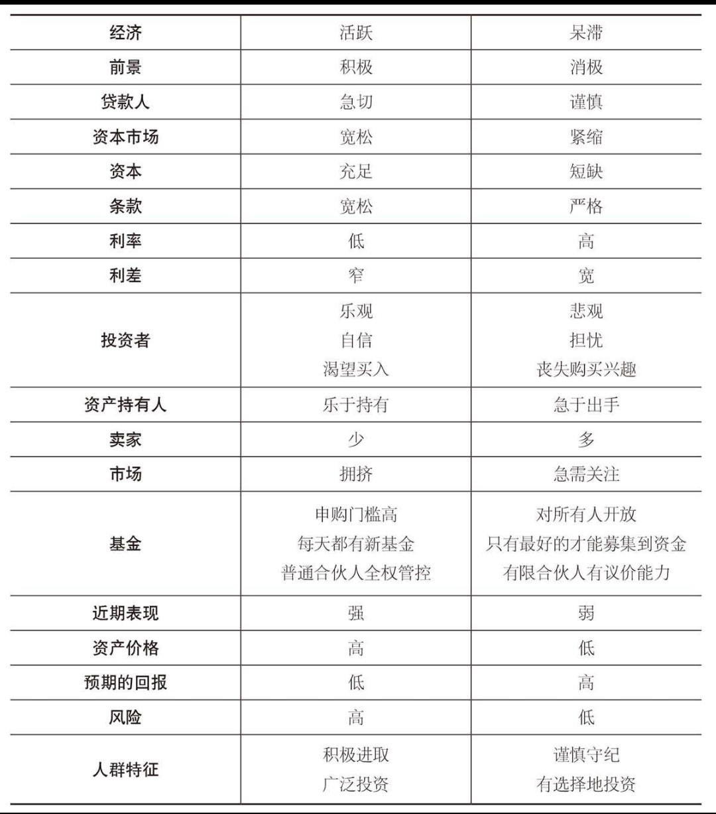

第 15 章：正确认识自身
市场周期给投资者带来了严峻的挑战，例如：
- 不可避免的市场涨跌。
- 对投资者业绩的重大影响。
- 无法预知的幅度和转折时机。
因此，我们不得不应付一股有着巨大影响但很大程度上不可知的力量。那么，面对市场周期我们该怎么做呢？
在我看来最为正确的答案：何不试着弄清我们处在周期的哪个阶段，以及这一阶段将对我们的行动产生怎样的影响？
在投资领域里，周期最可靠。基本面、心理因素、价格与收益的涨跌，提供了犯错或者从别人的错误中获利的机会。这些都是已知的事实。
我们不知道一个趋势会持续多久，不知道它何时反转，也不知道导致反转的因素以及反转的程度。但是我相信，趋势迟早都会终止。没有任何东西能够永远存在。
第一，当市场已经到达极端的时候，保持警惕；第二，相应地调整我们的行为；第三，最重要的是，拒绝向导致无数投资者在市场顶部或底部犯下致命错误的群体行为看齐。
了解未来很困难，但是了解现在没有那么难。我们需要做的是『测量市场温度』。保持警觉和敏锐，我们就能够判断出其他人的行为，并据此判断我们应采取的行动。
我们必须力求了解我们身边所发生的事情的含义。当其他人盲目自信、积极买入时，我们应加倍小心；当其他人不知所措或恐慌性抛售时，我们应该更加积极。
这里有个简单的练习，可以帮助你测量未来市场的温度。我列出了一些市场特性。从任意一对词语中选出一个你认为最能贴切地描述当前状况的。如果你发现你的标记大部分在左侧栏里，那你就要像我一样，看紧自己的钱包。

市场在周期性运动，有涨有跌。钟摆在不断摆动，极少停留在弧线的中点。这是危险还是机遇？投资者该如何应对？我的回答很简单：努力了解我们身边所发生的事情，并以此指导我们的行动。